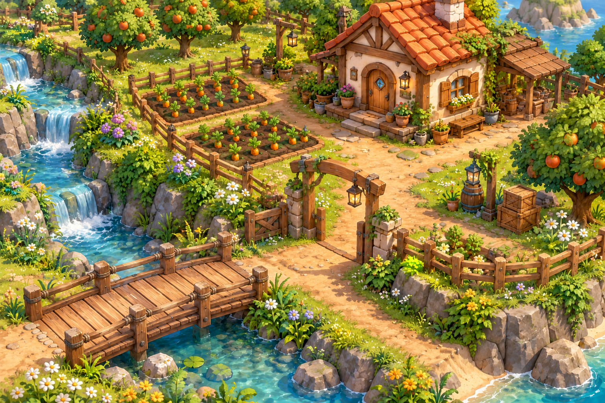

الكود يحرّك موشي. اضغط على الأماكن لتتعرّف عليها.
أسلوب Colorful Farm المختار · تجربة محدودة للتحية والحركة. الزراعة والدروس الكاملة تأتي لاحقًا.

أسلوب Colorful Farm المختار · تجربة محدودة للتحية والحركة. الزراعة والدروس الكاملة تأتي لاحقًا.